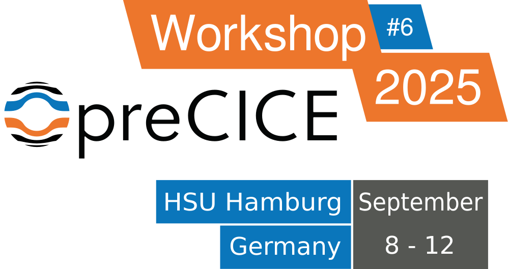

The 6th preCICE Workshop was held at the Helmut Schmidt University / University of the German Federal Armed Forces Hamburg on September 8-12, 2025, co-organized by the local user group. The workshop is a coming together of the preCICE community to share ideas, experiences and knowledge about using preCICE, and to learn from others in the process. Like always, we had user and developer talks, hands-on training sessions, discussions with the developers about your applications and use cases, and plenty of opportunities for networking. Read more about how a preCICE workshop looks like.
The workshop included a hands-on training course. The course is suited for both beginners and current preCICE users, since advanced topics will also be covered. This year, we extended the course by a new module on HPC.
In the developer talks, the maintainer team presented recent updates on dynamic meshes, mesh-particle coupling, and macro-micro coupling – to only mention a few highlights. And we continued the standardization process of adapters and application cases, where you can help shaping the future.
Call for contributions
Abstract submission already closed.
We are looking for talks and posters that could be beneficial for the wider preCICE community. Are you developing a new adapter (such as for G+Smo or ISSM last year)? Are you using preCICE for an exciting new application? Are you developing new methods that should not be missing from preCICE? If the answer to any of these questions was yes, we encourage you to submit a brief abstract for a 20 minutes talk. Are you revisiting one of the classical preCICE use cases? Did you already present your work in a previous workshop? Then we would be very happy to catch up with your work and we encourage you to present a poster. You do not need to submit a contribution to join this workshop. However, your contributions are very welcome!
Important dates
- Abstract submission deadline: June 14 (extended)
Expect news on your submission two weeks later.
You don’t need to submit a contribution in order to attend. - Registration deadline: July
1529 (extended).
Registration
Registration already closed.
The workshop includes two main parts:
- Training course: September 8-9. Includes the course parts 1-5.
- Main workshop: September 10-12. Includes a new part of the course (running preCICE on HPC systems) and everything else.
Ticket prices:
| Ticket | Price |
|---|---|
| Full ticket (incl. course) | 700 € |
| Full ticket (incl. course) - academic discount | 350 € |
| Main workshop (no course) | 500 € |
| Main workshop (no course) - academic discount | 250 € |
| Holders of a support license | 0 € |
The ticket includes access to all talks, the consulting/user-support sessions (during the workshop and an online post-workshop session), an invited dinner, as well as lunch and coffee breaks on all days. The full ticket also includes access to the course on September 8-9. For the payment, we will send invoices after the deadline.
Accommodation
Please arrange accommodation independently. To make the booking process easier for you, we have blocked a number of rooms at fixed prices at the following hotels (click the arrow to see details):
Garner Hotel Hamburg - Wandsbek Marktplatz (previously Tiefenthal) - Hotel website
Prices:- single room: 94€/night
- breakfast: included
Workshop "preCICE" via email at hamwb.garner@novum-hospitality.com or via phone at +494067049670.Park Hotel am Berliner Tor - Hotel website
Prices:- single room between Sep 7-8: 99€/night
- single room between Sep 8-12: 134€/night
- Breakfast: 15€/day
Book until August 8 using
Workshop "preCICE" via e-mail at info@phhhcc.de or via phone at +4940251640.Program
All workshop components will take place in the seminar room 405/406 (Holstenhofweg 85, 22043 Hamburg). Note that, as a university of the armed forces, the HSU campus has controlled access, and an ID card / passport is required to enter the campus. A second room (404) is also available for side-meetings.
Preliminary schedule:
- Monday (course):
- 12:00-13:00: 🍜 Registration and lunch
- 13:00-13:30: Setting up for the Training course
- 13:30-15:30: Course part 1 (Basics) - Benjamin Uekermann and Gerasimos Chourdakis
- 15:30-16:00: ☕️ Coffee break
- 16:00-18:00: Course part 2 (Tools) - Gerasimos Chourdakis
- 19:00-22:00: 🍻 Time for community-organized social events
- Tuesday (course):
- 08:30-09:00: ☕️ Arrival and coffee
- 09:00-11:00: Course part 3 (Implicit coupling) - Benjamin Uekermann
- 11:00-12:00: Course part 4a (Data mapping) - Benjamin Uekermann
- 12:00-13:00: 🍜 Lunch
- 13:00-14:30: Course part 4b (Data mapping) - Benjamin Uekermann
- 14:30-15:00: ☕️ Coffee break
- 15:00-17:00: Course part 5 (FSI workflow) - Claudio Caccia (community training block)
- 17:00-18:00: Course recap and Q&A
- 19:00-22:00: 🍻 Time for community-organized social events
- Wednesday (main workshop):
- 08:30-09:00: ☕️ Arrival and coffee
- 09:00-12:00: Course part 6 (HPC, new) - Gerasimos Chourdakis
- 12:00-13:00: 🍜 Lunch
- 13:00-14:30: Welcome and user introductions
- 14:30-15:00: ☕️ Coffee break
- 15:00-16:30: News, part 1
Chair: Ishaan Desai
News on the preCICE coupling library
Frédéric Simonis (webpage, GitHub)
University of Stuttgart, Germany - slidesNew features, fixes, and plans in the core library. A deeper look into the v3.2.0 release notes and further developments since (changelog entries, v3.3.0 milestone, roadmap).
News on the preCICE coupling ecosystem
Gerasimos Chourdakis (webpage, GitHub)
University of Stuttgart, Germany - slidesUpdates on the available bindings, adapters, tutorials, and further tools built on top of the core library and included in the preCICE distribution.
News on the standardization process
Benjamin Uekermann (webpage, GitHub)
University of Stuttgart, Germany - slidesUpdates on the standardization process and the DFG project preECO, including guidelines for adapters and guidelines for application cases.
- 16:30-17:00: ☕️ Coffee break
- 17:00-18:00: Talks
Chair: Gerasimos Chourdakis
Volume-coupled nuclear reactor analysis with preCICE
Mario A. Ponce Tovar* (webpage), Cynthia C. Güttlein, Ivor D. Clifford, Alexey Cherezov, Hakim Ferroukhi
Paul Scherrer Institut, ETH Zurich, SwitzerlandSince the release of the preCICE library, it has garnered growing interest within the nuclear energy community. Multiphysics coupling, and particularly black-box coupling, is highly relevant within the field due to the multitude of considered phenomena and the large quantity of established single-physics codes that are present. Coupling needs have traditionally been met by bespoke coupling implementations (lacking generality and performance), or by employing generalized PDE frameworks such as OpenFOAM or MOOSE which limit the user to a single discretization method. Given that preCICE offers an antidote to these limitations, it has already been applied to both fission and fusion reactor analysis with success. However, the examples in the available literature have been limited to surface-coupled and multi-fidelity “high-low” applications, leaving out the most critical coupled problem in fission reactor analysis. Now, leveraging the volume-coupling capabilities of preCICE v3, we have modelled a coupled fission microreactor with time-dependent neutronics and thermal feedback. Furthermore, we plan to develop a complete open-source toolchain for such reactors—with preCICE as the backbone. This talk will give an overview of the coupled codes/frameworks, the results of a preliminary benchmark which compares preCICE with internal coupling, and how we envision the advanced features of the library being employed going forward.
Fluid-Fluid coupling across models and dimensions: From OpenFOAM to FEniCS
Ingo Steldermann* (webpage), Julia Kowalski
RWTH Aachen University, GermanyWhen designing simulation software for fluid-flow applications, it is usually not about 'how accurate can we go?' but rather about 'how accurate do we want to be given resource X?'. One strategy to combine sophisticated models where they are needed with coarse-grained models when they are sufficient is coupling. In the field of free-surface fluid flow simulations, such ideas are hardly new. However, there are numerical challenges to overcome when coupling different flow models, which may also involve changes in their dimensionality. The trio of preCICE, OpenFOAM and FEniCS enables modelers to quickly get where they need to be - at the coupling interface between existing solutions and new research ideas. In this talk, we showcase our journey with preCICE on how to couple a 3d RANS flow model of OpenFOAM, with our implementation of the shallow moment equations in 2d. The shallow moment equations are a model hierarchy with the classical shallow water equations at its base. They are an interesting coupling partner as they allow for an adaptive resolution of the flow variables at the interface. We analyze the impact of the projection error introduced at the coupling interface and how it changes across the model hierarchy, flow conditions, and flow direction.
- 19:00-22:00: 🥂 Invited dinner at Alster Lagune
- Thursday (main workshop):
- 08:30-09:00: ☕️ Arrival and coffee
- 09:00-10:00: Keynote talk
Chair: Benjamin Uekermann
Fluid-structure interactions in high-enthalpy flows
Daniel J Bodony (webpage)
University of Illinois Urbana-Champaign, USAUnderstanding the interactions of high-enthalpy flows with structures is scientifically rich and critically important for high-speed flight systems. The fluid dynamics of high-enthalpy flows (characterized by Mach numbers greater than 5 or enthalpies of tens of MJ/kg) is characterized by instabilities, turbulence, shocks, chemical and/or thermal non-equilibrium while the structural dynamics include nonlinear thermo-elasticity, ablation, and oxidization. We seek to understand the details of key fluid-structure interactions through the use of flow stability analysis and direct numerical simulations of the compressible turbulent reactive (possibly non-equilibrium) flow coupled with material response simulations of the adjacent structure. Our computational approach utilizes multiple domain-specific codes built for heterogeneous computing architectures that are coupled through preCICE for data exchange and time integration framework while our analytical approach also fully couples the fluid and solid mechanics. The presentation will describe these tools and their results through application on key problems of interest, such as Mach 6 shock-laden flows interacting compliant panels studied in NASA Langley's 20-inch tunnel, and the non-equilibrium flow within UIUC's Plasmatron-X inductively coupled plasma torch and the response of an ablative material placed within it.
- 10:00-10:30: News, part 2
Chair: Benjamin Uekermann
News on the automation tools
Felix Neubauer (webpage, GitHub)
University of Stuttgart, Germany - slidesOverview of new automation tools such as the preCICE command-line interface, configuration generator, configuration checker, and more.
- 10:30-12:00: Poster session
- 12:00-13:00: 🍜 Lunch
- 13:00-15:00: Talks
Chair: David Schneider
Coupling Particle Simulations: Challenges, Strategies, and the ON-DEM Vision
Anthony Thornton*, Thomas Weinhart, Daniel Barreto
University of Manchester, UK - slidesThe Discrete Particle Method (DPM), aka Discrete Element Method (DEM), simulates the motion and interaction of individual grains and has proven highly successful in modelling granular processes. However, tackling the next generation of challenges—such as multiphysics interactions and multiscale phenomena—requires coupling DPM with continuum solvers for fluids and deformable solids. Additionally, the growing complexity of industrial processes is pushing the limits of DEM, which remains computationally intensive. This calls for flexible, efficient coupling strategies to extend the capabilities of DEM. In this talk, we present the main types of DEM coupling currently used in the field. We focus on three key approaches: Surface coupling, which models the interaction between granular materials and soft or deformable boundaries; Volume coupling, which allows hybrid modelling where some regions are simulated with DEM and others with a continuum approach—enhancing scalability without sacrificing accuracy; Particle–fluid coupling, which models the interaction of particles with a background fluid or thermal field. We also introduce the newly funded European COST network ON-DEM (Open Network on DEM simulations), which aims to accelerate progress in this area. We conclude by discussing the integration of the coupling library preCICE, highlighting its potential as a key enabler for ON-DEM's goals and the broader future of particle simulation.
Coupled simulations of ice sheet dynamics and subglacial hydrology of the Greenland Ice Sheet: insights into performance
Daniel Abele, Thomas Kleiner* (webpage), Angelika Humbert
Alfred-Wegener-Institut, Helmholtz-Zentrum für Polar- und Meeresforschung, Bremerhaven, GermanyIce sheet dynamics strongly depend on sliding at the glacier base and, therefore, on the subglacial hydrology. Correspondingly, the glaciers influence the hydrological system through, e.g., ice overburden pressure and melt water generated by geothermal and frictional heat. Because of this interaction, coupled simulations of the system are required. We use preCICE to couple the finite element Ice-sheet and Sea-level System Model (ISSM) and CUAS-MPI, a parallel implementation of the Confined-Unconfined Aquifer System model for subglacial hydrology based on finite differences.
We present our recent progress on the preCICE adapters for both models (solvers) and the coupling setup, including work on preECO standard conformity and the adoption of the adapter configuration schema. Performance measurements are conducted using a real-world scenario that simulates the entire Greenland Ice Sheet, where we compare serial and parallel coupling. We also discuss the technical realisation of the coupling workflow on a high-performance computing cluster. The performance results show that coupling with preCICE has low computational overhead and does not negatively impact scaling.
Coupled Multibody and 3D Structural Dynamics Simulations with MBDyn, CalculiX, and preCICE
Claudio Caccia* (webpage, GitHub), Pierangelo Masarati
Politecnico di Milano, ItalyMultibody dynamics (MBD) provides an efficient framework for simulating flexible structures, especially when using beam or shell elements. However, in regions where complex stress distributions occur, simplified models fail to be informative, and a full 3D structural model is required. This presentation outlines a methodological approach for integrating the multibody solver MBDyn with the finite element solver CalculiX through the use of preCICE. The integration of these approaches allows the execution of simulations that are both efficient in terms of computational resources and detailed in their representation of structural dynamics.
This coupling strategy can also reproduce well-established structural modeling techniques, such as RBE2 or RBE3 elements, but applied across different solvers. The presentation will include case studies that demonstrate the methodology in action, emphasizing its capacity for fast and efficient structural dynamics simulations.
Beyond structural simulations, preCICE also enables coupling with computational fluid dynamics solvers, extending this methodology to fluid-structure interaction problems, such as helicopter blade aeroelasticity. Furthermore, the adaptability of this methodology ensures its efficacy in a broad spectrum of coupled problems, thereby facilitating the simulation of intricate engineering systems while maintaining optimal computational efficiency.
Dynamic Meshes in preCICE
Frédéric Simonis* (webpage, GitHub), Benjamin Uekermann
University of Stuttgart, Germany - slidespreCICE is an open-source coupling library for partitioned multi-physics simulations. It provides a flexible framework for exchanging mesh-based data between different simulation codes, enabling the simulation of complex multi-physics problems involving multiple solvers. These solvers may run on massively parallel systems with large meshes partitioned among their ranks. To facilitate leveraging parallel systems, preCICE requires solver meshes to remain static during the simulation. This restricts users in need of moving geometries to either using ALE methods relying on a static reference domain, or to use direct-mesh access and handle data-mapping themselves. In this talk, I showcase the current state of dynamic meshes to preCICE as well as cost-effective use-cases. This includes the necessary orchestration to ensure a consistent state between solvers, the challenges of handling the shift of work from one-time to reoccurring operations, and open questions regarding implicit coupling.
- 15:00-15:30: ☕️ Coffee break
- 15:30-16:30: Talks
Chair: Carme Homs Pons
A time adaptive Quasi-Newton Waveform method for partitioned dynamic coupling
Philipp Birken* (webpage), Niklas Kotarsky
Lund University, SwedenWe consider coupled time dependent partial differential equations on separate domains, This can be used to model conjugate heat transfer, but also the transfer of wind stress between ocean and atmosphere, or flutter of airplanes. Our interest is in so called waveform relaxation. There, the subproblems are solved iteratively on a time window, given an approximation of the solution to the other problem. These methods open up variable time steps and time adaptivity while using separate codes for the subproblem. They can be combined with a relaxation step or Quasi-Newton acceleration.
We present a novel time adaptive Quasi-Newton waveform method. This employs a fixed auxiliary time grid to define the Quasi-Newton method, leading to an interpolation error. This error can be controlled through the choice of the auxiliary grid. The method is amenable for implementation in a coupler such as preCICE and is in fact part of the current release. We discuss theoretical properties for the linear case and demonstrate its performance on a thermal transfer test case and a fluid-structure interaction test case in a setup with open Source PDE solvers, coupled to preCICE.
Bound-Aware Quasi-Newton Strategies for Partitioned Coupling in preCICE
Jun Chen* (webpage, GitHub), Miriam Schulte
University of Stuttgart, Germany - slidesIn partitioned multi-physics simulations and in preCICE, quasi-Newton (QN) methods are widely used to accelerate convergence at the coupling interface. However, standard QN schemes often disregard bound constraints arising from the underlying physic-such as saturation or pressure limits in porous media-resulting in physical values exceeding the prescribed bounds and reduced robustness. In this talk, we present and compare several bound-aware QN approaches designed to handle such constraints effectively within the preCICE framework. We focus on modular methods that balance step length control, projection techniques, and space-splitting strategies that separate trusted and extrapolated components of the update. These methods aim to balance convergence speed with physical feasibility, especially in strongly nonlinear or ill-scaled settings. The fundamental principles and the trade-offs between the various methods will be discussed, with conclusions drawn from experiments in designed scenarios involving bounded variables. All methods are being implemented and tested in preCICE. The goal is to make these strategies accessible and beneficial to users facing similar challenges when coupling scenarios involving physically meaningful bounds.
- 16:30-16:45: 📸 Group photo
- 16:45-18:00: World Café
Coordinator: Benjamin Uekermann
- Friday (main workshop):
- 08:30-09:00: ☕️ Arrival and coffee
- 09:00-12:00: User support session
- 12:00-13:00: 🍜 Lunch
- 13:00-15:00: User support session
A few weeks after the workshop, we will also have an online follow-up user support session (October 24, 13:00-16:00, online).
Posters
Multi-fidelity approaches for the non- linear aeroelastic assessment of the Pazy Wing
Alessia Bove, Claudio Giovanni Caccia*, Giuseppe Quaranta, Pierangelo Masarati
Politecnico di Milano, Italy
Politecnico di Milano, Italy
The Pazy Wing was designed, built and tested with the objective of establishing a novel experimental standard to evaluate the validity of diverse numerical methodologies in accurately identifying the aeroelastic behaviour of a lifting surface undergoing deformations up to 50% of its span.
The present study is aimed at investigating the aeroelastic behavior of such wing, addressing also the LCOs (limit cycle oscillations) nature by means of a series of coupled, time marching simulations. The structural model is implemented in MBDyn, while the fluid one leverages the capabilities of various aerodynamic methods, namely those of the:
- Strip Theory, built in MBDyn used with and without a tip losses correction model;
- Panel Method (PM) and Vortex Lattice Method (VLM), both built in Dust software, coupled to MBDyn by means of preCICE;
- CFD, coupling OpenFoam to MBDyn by means of preCICE. The results obtained using the VLM and the PM were in good agreement with the data gathered in wind tunnel tests and allowed to address the LCOs nature to structural non linearities and 3D aerodynamics. The CFD was used to confirm the preceding outcomes. Owing to the substantial deformation of the wing, which would generate an excessive distortion of the fluid mesh, simulations were executed starting from a pre-deformed configuration reached by the wing through a sequence of preliminary iterations employing the strip theory (utilising MBDyn exclusively) prior to the initiation of the coupling.
Micro Manager: a tool to faciliate multiscale coupling with preCICE
Ishaan Desai* (webpage, GitHub), Carina Bringedal, Benjamin Uekermann
University of Stuttgart, Germany
University of Stuttgart, Germany
For many multiscale applications in simulation technology, micro-scale phenomena dominate macro-scale behavior. Accurately resolving micro-scale effects on the macro-scale involves a coupling between one macro-scale model to a large number of micro-scale models. In this work, we present the Micro Manager, a software solution to couple models at different length scales using preCICE. preCICE is designed to couple two or more simulations on the same scale. The Micro Manager creates a large number of micro simulations from a user-created library, and adaptively controls them. This approach reuses coupling functionality of preCICE while also preserving the black-box coupling philosophy. The Micro Manager has two adaptivity strategies. In the first strategy, the micro simulations are marked as active or inactive based on a user-tuned similarity criteria. To get the complete micro-scale solution field, the inactive simulations are associated to their most-similar active counterparts. In the second strategy, the user provides not just one model as a micro simulation, but instead a hierarchy of surrogate models. To create these surrogate models, the Micro Manager has a snapshot creation functionality. Based on a user-defined rule-set, the Micro Manager switches from a full-order model to a reduced-order model. In this poster, we show a diverse range of applications using the Micro Manager, and discuss scalability and HPC aspects of solving realistic multiscale scenarios.
Development of a preCICE adapter for foam-extend
Patrick Höhn* (GitHub)
University of Göttingen, Germany
University of Göttingen, Germany
Drilling for sub-surface energy (oil, gas, geothermal heat) is crucial but expensive, accounting for large parts of project costs. Efficient transport of cuttings from the drill-bit to the surface is essential, but in-situ measurements of drilling parameters are challenging. Many investigations rely on simplified laboratory setups and software-based simulations. The research problem studied by the author aims to evaluate the influence of cuttings transport on the damping of lateral vibrations in drill strings. A simulation consisting of particle transport and fluid-structure interaction is required to understand the complex phenomena. The multiphysics library preCICE is used to achieve the coupling between the different physical processes. The presentation discusses the differences between OpenFOAM.org and foam-extend, and the adjustments made to the preCICE adapter for the different foam-extend versions. A test-case demonstration will be presented to showcase the capabilities of the preCICE adapter.
Coupled Multi-Physics Simulation of the Agonist-antagonist Myoneural Interface
Carme Homs-Pons* (webpage, GitHub), Miriam Schulte
University of Stuttgart, Germany
University of Stuttgart, Germany
The agonist-antagonist myoneural interface (AMI) is a novel amputation technique that would benefit from in silico experiments to support the identification of optimal physiological and anatomical parameters. We model the AMI as a two-muscle-one-tendon system. In particular, we model the mechanical coupling between the muscles, and the coupling through the sensory reflex pathways. We model each muscle using a coupled electrophysiology-mechanics model. This way, we are able to capture the main processes that influence the coupling between the muscles: neural activation, generation of force at the cellular level, propagation of electrical signals through the fibers, and macroscopic deformation. We implement our model following a monolithic simulation approach, and compare it to a partition simulation approach using preCICE. We also show our updates in the OpenDiHu adapter in order to support the exchange sensory data. These updates are needed to model the sensory feedback loop between the agonist-antagonist muscle pairs, and allow us to run three-participant simulations including both mechanical and sensory coupling. In future work, we will model the AMI using a five-participant simulation approach with preCICE.
Investigating Data Mapping and Coupling Schemes in preCICE for Partitioned FSI
Nicolas Lesquoy* (GitHub), Guillaume de Nayer, Michael Breuer
Helmut Schmidt University Hamburg, Germany
Helmut Schmidt University Hamburg, Germany
The partitioned approach to Fluid-Structure Interaction (FSI) simulation offers notable advantages over the monolithic approach, particularly in terms of development time, flexibility, and modularity. However, setting up such simulations can be challenging, especially in black-box coupling scenarios where limited information is provided by the solvers to the coupling library. This work aims to assess the characteristics and performance of the coupling procedures implemented in preCICE, focusing on its integration into the in-house CFD solver FASTEST-3D and the open-source structural solver CalculiX. Data mapping methods will be evaluated using the ASTE testing environment, with particular attention given to RBF-based approaches. Another key objective is to understand the coupling schemes available in preCICE, with an emphasis on quasi-Newton methods. The influence of different coupling configurations with regards to various mapping techniques and coupling scheme combinations, will be investigated using standard numerical benchmarks such as the flexible lid-driven cavity problem and the Hron/Turek FSI3 benchmark. These studies will enable a comprehensive performance evaluation on a modern computing cluster, focusing on runtime, scalability, and accuracy. Ultimately, this work aims to advance the understanding of partitioned coupling strategies for FSI problems and to identify best practices for achieving robust and efficient simulations using preCICE.
Isogeometric Analysis-Based Partitioned Fluid-Structure Interaction with Fully Coupled Mesh Generation
Jingya Li* (webpage, GitHub), Ye Ji, Hugo Verhelst, Matthias Möller
Delft University of Technology, The Netherlands
Delft University of Technology, The Netherlands
In fluid–structure interaction (FSI), the coupling between a deformable solid and a moving fluid takes place along a continuously evolving interface. Accurately and stably resolving this interaction becomes especially demanding when the structure undergoes large deformations, significantly affecting the surrounding fluid domain. Instead of relying on conventional mesh deformation techniques, we adopt a partitioned FSI approach that avoids continuous mesh motion.
In this framework, specialized solvers for the fluid and structural fields are coupled iteratively across their shared interface. At each time step, we generate a new high-order, analysis-suitable fluid mesh based on the latest interface configuration, eliminating the need for mesh-to-mesh projection. The interface geometry is provided by an Isogeometric Analysis (IGA)-based structural solver (G+Smo), and passed to the fluid solver through a spline-based coupling strategy that accommodates non-matching discretizations. This ensures smooth and accurate transfer of physical quantities—such as velocity, pressure, and displacement—across the interface. The resulting pipeline is both robust and efficient, particularly in simulations involving large structural motions and complex geometric evolution.
Standardizing preCICE Adapters with MetaConfigurator
Felix Neubauer* (webpage, GitHub), Gerasimos Chourdakis, Benjamin Uekermann
University of Stuttgart, Germany
University of Stuttgart, Germany
Interoperability and standardization are essential for the growing ecosystem of preCICE adapters. We present a JSON Schema-based specification for preCICE adapter configurations, complemented by comprehensive guidelines for adapter development. By formalizing configuration structures, we enable automated validation, tooling support, and improved documentation, while ensuring that adapters themselves adhere to shared standards. As a central tool, MetaConfigurator provides a schema-driven web interface that simplifies the creation and validation of configuration files, lowering the entry barrier for both adapter developers and users. This approach supports the FAIR principles by promoting interoperability and reusability not only of configuration files, but of the adapters and coupling setups themselves, fostering a more robust and sustainable preCICE ecosystem.
A preCICE coupled fire-structure framework for predicting smoke leakage in and progressive collapse of fire-exposed concrete structures
Arulnambi Palani* (webpage), Max Rottmann, Chaitanya Kandekar, Michael Breuer, Wolfgang E. Weber
Helmut Schmidt University Hamburg, Germany
Helmut Schmidt University Hamburg, Germany
Modeling damage due to under mechanical loading is quite well understood for large structures, e.g., buildings; however, predicting structural integrity under fire exposure remains a complex task. Elevated temperatures significantly degrade load-bearing capacities, critically complicating rescue operations. Firefighters must accurately predict safe evacuation routes based on structural integrity assessments and smoke distributions within building. Addressing this issue necessitates a coupled multi-physics and multi-scale computational approach. This research introduces an enhanced partitioned framework integrating distinct simulation software packages, coupled via preCICE. The fluid flow and combustion processes and the resulting smoke propagation are simulated using the Fire Dynamics Simulator employing large-eddy simulation. Structural response and progressive collapse due to load redistribution across scales are calculated using Abaqus. Thermo-mechanical damage, including crack propagation are computed via a FEniCS-based phase-field solver with thermal boundary conditions stemming from the fire simulation and the displacement field stemming from the structural solver. The coupling framework dynamically updates the geometry in both simulations based on evolving structural damage, facilitating accurate predictions of smoke leakage and structural integrity. A numerical example demonstrates the framework’s capability in forecasting damage
Ice-sheet and subglacial-hydrology simulations coupled through preCICE
Jeremie Schmiedel*, Roiy Sayag
Ben-Gurion University of the Negev, Israel
Ben-Gurion University of the Negev, Israel
Subglacial networks at the ice-bed interface are considered a key component of ice sheet dynamics with the potential to facilitate rapid ice flow and to trigger the formation of surges and ice streams. Various numerical methods have been developed to simulate the effects of such networks on ice flow. Validation of these models is crucial to ensure that the important subglacial physical processes are accurately captured. We investigate numerically the interaction of the subglacial network and the ice flow. We do that by coupling the Ice-sheet and Sea-level System Model (ISSM) with the confined–unconfined aquifer system (CUAS-MPI) hydrology model using preCICE. Having validated each of the numerical simulations separately, our goal in this study is to validate the coupled system using known solutions of lubricated gravity currents. These are, viscous flows driven by gravity that consist of two immiscible fluids that propagate along a solid substrate, and interact at their common interface. One fluid of lower viscosity, simulated by CUAS-MPI, lubricates the flow of a more viscous fluid, simulated by ISSM. Such flow system exhibits self-similar solutions, which we use for validation. The results of such a validated coupled approach are more credible and can consequently lead to more accurate predictions of ice sheets evolution.
Flexible mesh-particle coupling with preCICE
David Schneider* (webpage, GitHub), Benjamin Uekermann
University of Stuttgart, Germany
University of Stuttgart, Germany
Recent efforts inside preCICE target specifically the coupling of mesh-based solvers with particle solvers. In earlier preCICE versions, these kind of coupling scenarios were intricate to realize due to the rigid mesh concept of preCICE. The traditional concept in preCICE requires users to define a coupling mesh initially once, before starting the simulation, and then use the defined coupling mesh throughout the simulation. This concept fundamentally contradicts the behavior of particle methods, which change their location within each timestep. With the newly developed just-in-time mapping or direct mesh access we are now able to loosen up the rigid concept and perform data mappings on variable spatial locations within each timestep. This poster shows the concept, its application and numerical results.
Coupling Neural Surrogates to Traditional Solvers using preCICE
Dagis Daniels Vidulejs* (GitHub), Benjamin Uekermann
University of Stuttgart, Germany
University of Stuttgart, Germany
Simulating systems of PDEs arising from physics often requires computationally intensive algorithms. While Neural Network (NN)-based surrogate models can accelerate solution times and reduce computational resource requirements, their current lack of reusability and solver modularity, where learned models often cannot be reused without re-training, hinders their adoption in scientific computing. We explore and develop an approach for coupling neural surrogate models with traditional solvers in a partitioned setup. Presenting - a new preCICE adapter for coupling neural surrogates, enabling the plug-and-play integration of data-driven and /or physics-informed models into larger simulation ecosystems.
Solving Partitioned Problems with FEniCSx and preCICE
Niklas Vinnitchenko* (GitHub), Ishaan Desai, Angelika Humbert, Benjamin Uekermann, Benjamin Rodenberg
Technical University of Munich, Germany
Technical University of Munich, Germany
FEniCSx, the successor of FEniCS, is an open-source computation platform designed to solve partial differential equations with the finite element method. It offers a high-level interface that provides functionalities that cover most of the simulation pipeline. The Python-based interface DOLFINx, along with the UFL library, simplifies the translation of mathematical models into efficient code. In this poster, we present the first feature-complete version of the FEniCSx-preCICE adapter, highlighting just-in-time mapping, communication of multiple data on multiple meshes and support for 3D coupling. With the partitioned heat equation solved with a FEniCSx-FEniCSx setup and a FEniCSx-OpenFOAM simulation of a fluid flowing over a heated plate we show potential use cases for the adapter and evaluate its performance.
Travel awards
We have up to 5 travel awards available for those who cannot join otherwise. Each award includes co-funding of 500€ for travel and accomodation and a waiver for the registration fee. If you are interested in this support, please briefly explain your situation by mailing to precice at hsu-hh.de.
Help us advertise
A successful workshop needs the right crowd of people. Please help us attract people from your field and make this workshop more relevant for you. For that, feel free to use this advertising material (poster, slide, and further formats). Did you know? Many past participants only discovered this workshop via a direct email.
Supporters